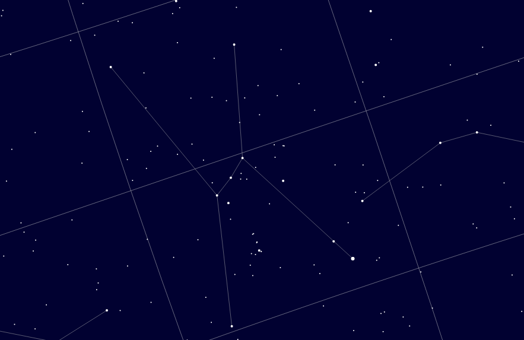

2019-01-30
 Click to launchThis sky map uses d3.js and paper.js to display the night sky.
It displays a projection of the night sky (stars down to magnitude 9, constellation lines, planets, brightest Messier and NGC objects). The star database derives from the astronomy nexus, and the constellation lines from the PP3 program.
You can zoom and drag the map, and hovering over a star displays its Draper catalog number and Bayer designation if available.
The amount of detail (ie the magnitude limit) depends on the zoom factor.
At a certain level, we load tiles containing fainter stars, and unload them when zooming out or panning across the sky. This is described in a blog entry.
To save memory and speed up loading, the constellation lines and boundaries are stored in TopoJSON, Mike Bostock's utility for encoding topology.